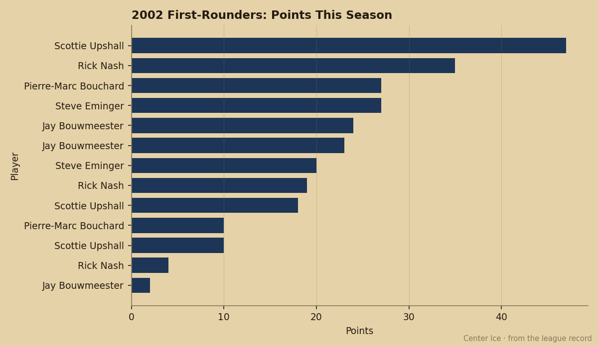
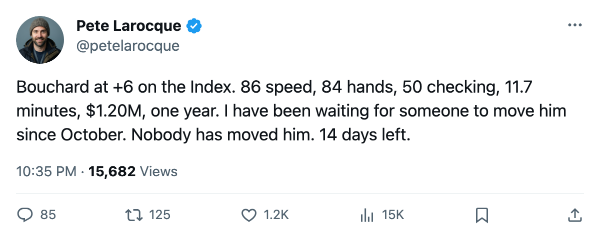
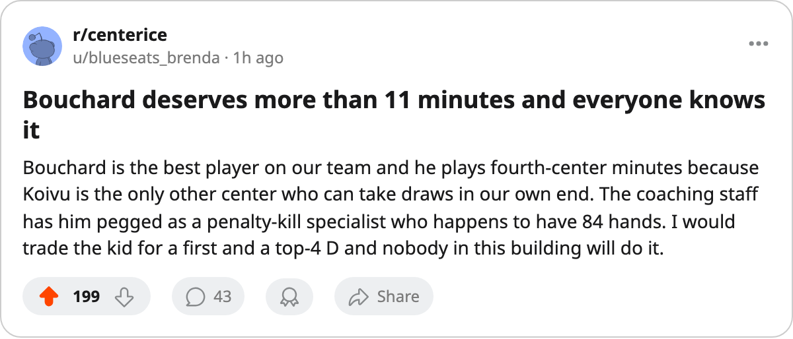

20 Years Old, 84 Puck Handling, 11.7 Minutes a Night
The Development Index has Pierre-Marc Bouchard in the same tier as Gaborik and Komisarek. Minnesota's lineup does not.
 Pete LarocqueScouting editor · The Prospect File
Pete LarocqueScouting editor · The Prospect FilePierre-Marc Bouchard81 sits at +6 on the Bureau's Development Index. So does  Marian Gaborik99. So does Mike Komisarek83. Gaborik plays 20.1 minutes and has 81 points. Komisarek plays 30.1 and has 70 from the blue line. Bouchard plays 11.7 minutes and has 27 points in 64 games.
Marian Gaborik99. So does Mike Komisarek83. Gaborik plays 20.1 minutes and has 81 points. Komisarek plays 30.1 and has 70 from the blue line. Bouchard plays 11.7 minutes and has 27 points in 64 games.
He is 20. He was the 8th pick in 2002. His contract pays $1.20M and has 1 year left.  Minnesota Wild has 55 points, the 2nd-worst record in the league.
Minnesota Wild has 55 points, the 2nd-worst record in the league.
The tools and the body
The Book's per-attribute grades on Bouchard tell one story: SPEE 86, DEKG 84, PASS 84, PUCK 84, ACCE 83, AGIL 83. Those are first-line center grades. Speed, deking, passing, puck control, all in the 84-86 band. A 20-year-old with that profile is a franchise forward.
Then there is the rest: CHKG 50, FIGH 50, TOUG 50. A 5'10", 165-pound frame that the Book scores at the floor of three separate physical attributes. The gap between 86 speed and 50 checking is the widest tool spread on any young forward in the league.
The desk has been asking all season whether a man with 50 in checking and fighting can hold a top-six role here. So far, no.  Saku Koivu84 is 81 overall,
Saku Koivu84 is 81 overall,  Wes Walz84 is 80 at center, and Bouchard at 73 is the third option.
Wes Walz84 is 80 at center, and Bouchard at 73 is the third option.
What +6 means when you play fourth-forward minutes
The risers table has Bouchard's base at 74, his form at +6, and his overall today at 73. Gaborik's base is 91, form +6, overall 96. Komisarek's base is 77, form +6, overall 80. Same Index reading for all three. Two of them carry their team's offense. One plays fourth-forward minutes on the worst team in the Northwest.

The 2002 class, six months on
Among the 2002 first-rounders still on league rosters, Bouchard has played 64 games. Scottie Upshall78 has played 53.  Rick Nash85, 54.
Rick Nash85, 54.  Jay Bouwmeester79, 66 at 32.7 minutes a night. Bouchard plays roughly a third of what Bouwmeester does and scores at 0.42 per game, which trails only Nash's 0.65 pace.
Jay Bouwmeester79, 66 at 32.7 minutes a night. Bouchard plays roughly a third of what Bouwmeester does and scores at 0.42 per game, which trails only Nash's 0.65 pace.
| player | draft pick | overall | GP | pts | mpg | ppg |
|---|---|---|---|---|---|---|
| Rick Nash | 1 | 81 | 54 | 35 | 12.5 | 0.65 |
| Jay Bouwmeester | 3 | 78 | 66 | 23 | 32.7 | 0.35 |
| Pierre-Marc Bouchard | 8 | 73 | 64 | 27 | 11.7 | 0.42 |
| Steve Eminger82 | 12 | 75 | 49 | 20 | 15.9 | 0.41 |
| Scottie Upshall | 6 | 77 | 53 | 18 | 9.4 | 0.34 |
Bouchard's 0.42 points per game leads the group except for Nash, who plays for a 106-point team. On a 55-point team, with Koivu at center, Bouchard's rate is the best on this club among forwards under 24.
$1.20M and one year left
His contract expires before the next season begins. He turns 21 in April. Minnesota at 55 points is not building toward a run. The trade deadline is 14 days away.
The tools say first-line center. The body says bottom-six. The lineup says third option. The contract says a year. The Index says his best hockey is right now. Four of those five sentences are on the sheet. The fifth is what the Bureau publishes every edition.
Bouchard told nobody anything this week. He played 11.7 minutes in another loss. What is on the sheet: 64 games, 27 points, 11.7 minutes, $1.20M, one year left, potential 86, speed 86, checking 50. The trade deadline is 14 days away.

